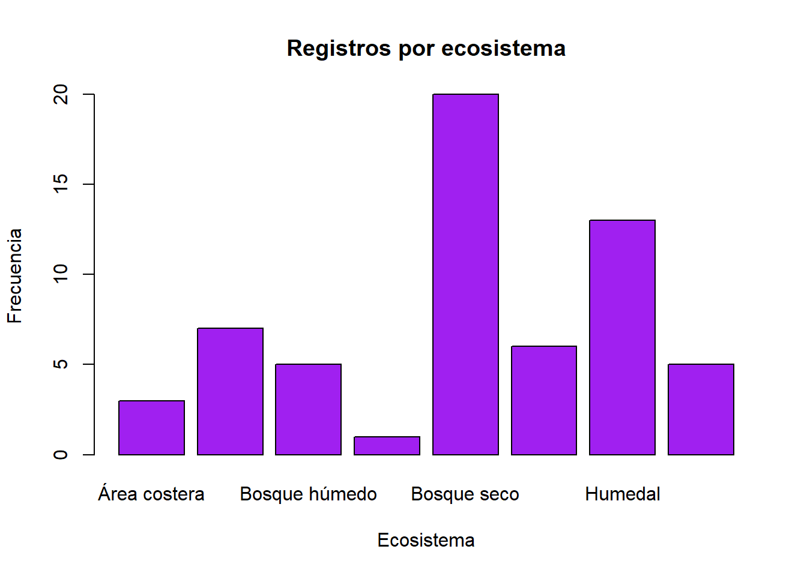
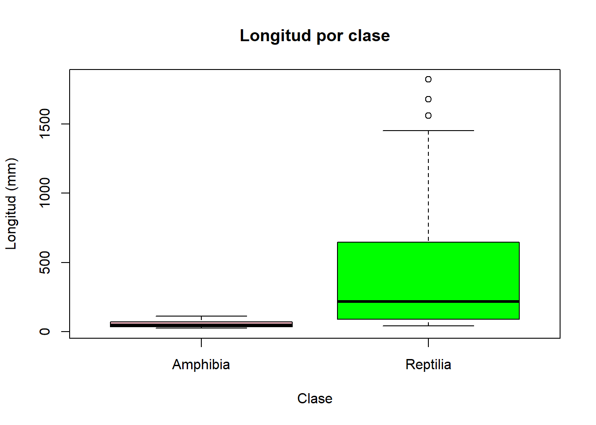

Herpetofauna del Caribe Colombiano- Análisis Exploratorio
Taller Semana 3 . Curso 20953
Author
Sonia del Carmen Díaz Arrieta
Published
May 16, 2026
Introducción
En el presente documento se realiza un análisis exploratorio de un conjunto de datos sobre la herpetofauna del Caribe colombiano, específicamente en los departamentos de Atlántico, Magdalena y Córdoba durante el año 2023. El dataset incluye información de reptiles y anfibios, lo que permite examinar patrones de distribución y características biológicas en diferentes ecosistemas.
Las variables principales que se analizarán son ecosistema, clase, longitud_svl_mm, peso_g y departamento, las cuales permiten describir la distribución espacial y las características morfométricas de los organismos registrados.
Este tipo de análisis es importante para comprender la biodiversidad regional y apoyar procesos de investigación y conservación en ecosistemas del Caribe colombiano.
El dataset contiene información sobre diferentes especies de herpetofauna, incluyendo variables ecológicas y morfométricas que permiten analizar su distribución.
Registros por ecosistema
barplot(table(herp$ecosistema),col ="purple",main ="Registros por ecosistema",xlab ="Ecosistema",ylab ="Frecuencia")

Distribución de registros por ecosistema. Fuente: datos del curso (2023).
El gráfico muestra que los registros no se distribuyen de manera uniforme entre los ecosistemas. Algunos ecosistemas presentan mayor frecuencia de registros, lo cual puede relacionarse con una mayor presencia de especies, mejores condiciones para el muestreo o mayor facilidad de acceso a esas zonas. Esta diferencia también puede indicar que el esfuerzo de observación no fue igual en todos los ecosistemas.
Longitud por clase
boxplot(longitud_svl_mm ~ clase, data = herp,col =c("pink", "green"),main ="Longitud por clase",xlab ="Clase",ylab ="Longitud (mm)")

Distribución de la longitud por clase. Fuente: datos del curso (2023).
El boxplot permite comparar la longitud corporal entre las clases registradas. En general, se observan diferencias entre reptiles y anfibios, lo cual es esperable porque ambos grupos poseen características corporales distintas. Esta comparación ayuda a identificar patrones morfométricos básicos dentro del conjunto de datos.
Warning
Una limitación del análisis es el tamaño del dataset, lo que puede afectar la representatividad de los resultados.
Reflexiones
Un documento Quarto tiene la ventaja de integrar texto, código, resultados y gráficos en un solo archivo, lo que facilita la comunicación de resultados biológicos de forma clara y reproducible. A diferencia de un script .R simple, Quarto permite explicar cada paso del análisis y presentar los resultados de una manera más ordenada para otros lectores.
Si se actualizaran los datos añadiendo registros de 2024, una persona que quiera reproducir el análisis debería descargar o actualizar el archivo CSV dentro de la carpeta datos/, verificar que las variables mantengan los mismos nombres y volver a renderizar el documento Quarto. De esta forma, los gráficos y resultados se generarían nuevamente con la información actualizada.
Que el repositorio sea público en GitHub significa que cualquier persona con el enlace puede consultar los archivos del proyecto, revisar el código utilizado y verificar los resultados obtenidos. Esto favorece la ciencia abierta porque permite transparencia, colaboración y revisión por parte de otros investigadores o docentes.